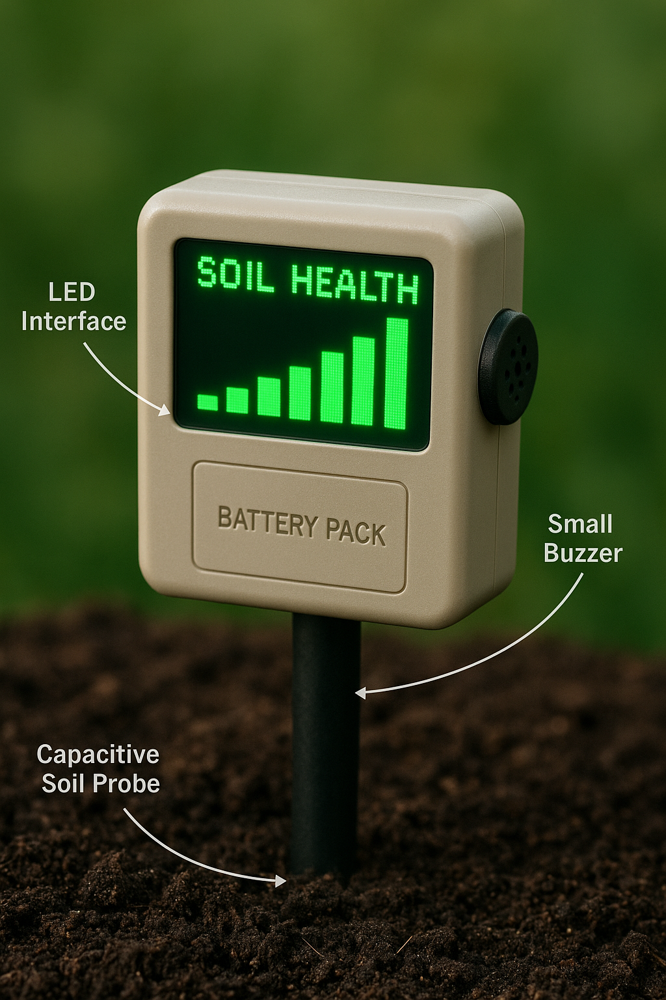

Design Ideation
Intro/Overview
At this stage, our team moved from identifying user needs to developing possible solutions. We explored different ideas through brainstorming and compared how each could meet our goals for the smart plant system. The purpose was to find a small set of practical designs that could later be improved and tested for our final product. By sharing ideas and combining different concepts, we aimed to create a system that is simple, reliable, and easy for users to operate.
Generating Ideas
Below is the product of generated ideas the team has brainstormed based on the user needs we identified in the previous section (Ease of Use, Functionality, Safety & Durability, Reliability & Performance, Sustainability, Connectivity & Integration, Aesthetics & Design, Support & Education, Value & Cost).
| requirement / need | feature | detail |
|---|---|---|
| product provides clear soil moisture notifications | buzzer | emits distinct tones for watering alerts |
| product provides clear soil moisture notifications | speaker | plays short voice prompts like “soil is dry” |
| product provides clear soil moisture notifications | LED indicator lights | green = healthy, yellow = needs water, red = dry |
| product provides clear soil moisture notifications | mobile push notification | sends alert to phone when soil moisture <20% |
| product provides clear soil moisture notifications | vibration motor | device vibrates when soil moisture drops too low |
| product measures soil moisture at multiple depths | capacitive soil sensor | detects soil water content with ±3% accuracy |
| product measures soil moisture at multiple depths | resistive probe sensor | measures soil resistance to infer moisture |
| product measures soil moisture at multiple depths | dielectric sensor | maintains accuracy across soil types |
| product measures soil moisture at multiple depths | multi-depth probe | reads moisture at root and surface levels |
| product measures soil moisture at multiple depths | wireless soil node | transmits readings to app every 30 minutes |
| product measures soil temperature accurately | thermistor probe | detects soil temperature with ±1°C accuracy |
| product measures soil temperature accurately | digital soil thermometer | shows readings directly on app |
| product measures soil temperature accurately | infrared sensor | measures topsoil without direct contact |
| product measures soil temperature accurately | dual-depth probe | compares shallow vs. root zone temperature |
| product measures soil temperature accurately | app graph | displays soil temperature history over time |
| product measures air temperature around plants | thermocouple | provides wide-range air temp measurement |
| product measures air temperature around plants | digital ambient sensor | compact, low-power temperature sensor |
| product measures air temperature around plants | infrared ambient sensor | detects radiant heat from sunlight |
| product measures air temperature around plants | fan-assisted sensor | improves airflow accuracy |
| product measures air temperature around plants | app alerts | warns user of extreme heat or cold |
| product tracks light intensity and duration | photodiode sensor | detects sunlight levels |
| product tracks light intensity and duration | lux meter | measures light in lux on app |
| product tracks light intensity and duration | RGB sensor | identifies type of light (sunlight vs. grow light) |
| product tracks light intensity and duration | exposure duration timer | records daily light exposure hours |
| product tracks light intensity and duration | cloud sync | compares light exposure with sunrise/sunset data |
| product monitors soil fertility and nutrients | EC probe | detects nutrient concentration levels |
| product monitors soil fertility and nutrients | ion-selective sensor | detects specific nutrient ions (N, P, K) |
| product monitors soil fertility and nutrients | modular add-on sensor | plug-in expansion for nutrient testing |
| product monitors soil fertility and nutrients | periodic testing alerts | reminds user to check soil fertility |
| product monitors soil fertility and nutrients | app-based nutrient log | stores nutrient readings historically |
| product controls automatic watering | built-in water pump | auto-waters when soil is dry |
| product controls automatic watering | gravity-fed drip system | simple passive watering method |
| product controls automatic watering | solenoid valve | controls external irrigation line |
| product controls automatic watering | adjustable schedule | user sets watering intervals in app |
| product controls automatic watering | manual override in app | user can trigger watering remotely |
| product monitors water tank level | float sensor | detects rising/falling water levels |
| product monitors water tank level | load cell | measures tank weight for water volume |
| product monitors water tank level | ultrasonic sensor | detects distance to water surface |
| product monitors water tank level | conductivity probe | detects water contact inside tank |
| product monitors water tank level | app low-water alert | sends warning when reservoir is nearly empty |
| product connects locally to devices | Bluetooth | pairs with smartphone for short-range use |
| product connects locally to devices | NFC tap setup | quick pairing with mobile device |
| product connects locally to devices | Zigbee module | integrates with smart home hubs |
| product connects locally to devices | offline mode | stores data for later sync without internet |
| product connects locally to devices | USB-C port | allows wired setup and firmware updates |
| product connects remotely for monitoring | Wi-Fi module | connects to home network for remote access |
| product connects remotely for monitoring | LTE cellular module | works without Wi-Fi connection |
| product connects remotely for monitoring | cloud integration | saves readings to online storage |
| product connects remotely for monitoring | mobile app dashboard | full control panel for users |
| product connects remotely for monitoring | API data export | allows advanced users to pull sensor data |
| product is durable in outdoor Arizona heat | waterproof casing | rated IPX-5+ for rain protection |
| product is durable in outdoor Arizona heat | stainless steel probes | resist rust and corrosion in soil |
| product is durable in outdoor Arizona heat | UV-resistant housing | prevents cracking from direct sunlight |
| product is durable in outdoor Arizona heat | drop-resistant shell | survives accidental drops up to 1m |
| product is durable in outdoor Arizona heat | tamper-resistant casing | prevents accidental disassembly |
| product ensures safe operation for users | low-voltage electronics | safe to touch during use |
| product ensures safe operation for users | insulated casing | prevents shocks or shorts |
| product ensures safe operation for users | non-toxic housing materials | safe around edible plants |
| product ensures safe operation for users | rounded edges | avoids cuts or injuries |
| product ensures safe operation for users | auto shutoff | device powers down if overheating detected |
| product remains reliable year-round | rechargeable battery | long-lasting, supports 6+ months runtime |
| product remains reliable year-round | solar backup panel | charges outdoors without plugging in |
| product remains reliable year-round | self-calibration | automatically adjusts sensor baseline |
| product remains reliable year-round | dual sensor redundancy | backup sensors ensure data accuracy |
| product remains reliable year-round | weekly self-test routine | device runs auto diagnostics |
| product supports sustainable use | solar panel charging | renewable energy option for device |
| product supports sustainable use | eco-mode watering | uses minimum water necessary |
| product supports sustainable use | recyclable housing | device shell made from recyclable plastic |
| product supports sustainable use | modular replaceable parts | extends product lifespan |
| product supports sustainable use | biodegradable packaging | reduces waste at shipping |
| product is easy to set up for new users | QR code pairing | scan to instantly connect device |
| product is easy to set up for new users | guided setup wizard | app walks users step-by-step |
| product is easy to set up for new users | one-button sync | pairs device with app quickly |
| product is easy to set up for new users | pre-configured profiles | auto setup by plant type selection |
| product is easy to set up for new users | audible setup tones | beeps confirm successful setup |
| product displays plant data clearly | LED indicators | show soil, light, and water status at glance |
| product displays plant data clearly | LCD display | shows numeric sensor readings |
| product displays plant data clearly | mobile app graphs | plots soil, light, and temperature trends |
| product displays plant data clearly | web dashboard | provides remote online access |
| product displays plant data clearly | weekly push report | sends plant health summary to phone |
| product provides educational plant support | species care library | app includes plant-specific guides |
| product provides educational plant support | seasonal tips | automatic reminders for weather changes |
| product provides educational plant support | video tutorials | step-by-step setup and plant care videos |
| product provides educational plant support | chatbot assistant | answers basic plant care questions |
| product provides educational plant support | app pop-up guides | short explanations of key features |
| product looks visually appealing indoors | neutral color options | available in white, gray, or green |
| product looks visually appealing indoors | compact size | fits into small pots without obstruction |
| product looks visually appealing indoors | decorative casings | optional wood or stone-style covers |
| product looks visually appealing indoors | minimalist design | sleek and modern appearance |
| product looks visually appealing indoors | LED light ring | adds subtle glow while showing status |
| product offers affordable ownership | tiered versions | basic and pro models available |
| product offers affordable ownership | bulk pack discounts | cheaper when buying multiple units |
| product offers affordable ownership | free basic app | no subscription needed for core features |
| product offers affordable ownership | transparent replacement part cost | clear pricing for probes/batteries |
| product offers affordable ownership | one-year warranty | covers repairs and replacements |
| product provides long-term customer support | firmware updates | keeps device updated over time |
| product provides long-term customer support | customer chat support | live assistance via app |
| product provides long-term customer support | troubleshooting guide | built-in instructions for issues |
| product provides long-term customer support | online community forum | user-to-user help space |
| product provides long-term customer support | feedback submission tool | allows users to suggest improvements |
Feature Rankings
Below is our teams ranking of selected features based on our genration of ideas. This table will help produce three possible product concepts combining different but also mutiple featues listed below.
| requirement / need | feature | rank |
|---|---|---|
| product provides clear soil moisture notifications | LED indicator lights | 1 |
| buzzer | 2 | |
| vibration motor | 3 | |
| speaker | 4 | |
| mobile push notification | 5 | |
| product measures soil moisture at multiple depths | capacitive soil sensor | 1 |
| resistive probe sensor | 2 | |
| multi-depth probe | 3 | |
| dielectric sensor | 4 | |
| wireless soil node | 5 | |
| product measures soil temperature accurately | thermistor probe | 1 |
| dual-depth probe | 2 | |
| digital soil thermometer | 3 | |
| infrared sensor | 4 | |
| app graph | 5 | |
| product measures air temperature around plants | digital ambient sensor | 1 |
| thermocouple | 2 | |
| fan-assisted sensor | 3 | |
| infrared ambient sensor | 4 | |
| app alerts | 5 | |
| product tracks light intensity and duration | photodiode sensor | 1 |
| lux meter | 2 | |
| exposure duration timer | 3 | |
| RGB sensor | 4 | |
| cloud sync | 5 | |
| product monitors soil fertility and nutrients | EC probe | 1 |
| modular add-on sensor | 2 | |
| ion-selective sensor | 3 | |
| periodic testing alerts | 4 | |
| app-based nutrient log | 5 | |
| product controls automatic watering | built-in water pump | 1 |
| gravity-fed drip system | 2 | |
| solenoid valve | 3 | |
| adjustable schedule | 4 | |
| manual override in app | 5 | |
| product monitors water tank level | float sensor | 1 |
| conductivity probe | 2 | |
| ultrasonic sensor | 3 | |
| load cell | 4 | |
| app low-water alert | 5 | |
| product connects locally to devices | USB-C port | 1 |
| Bluetooth | 2 | |
| NFC tap setup | 3 | |
| Zigbee module | 4 | |
| offline mode | 5 | |
| product connects remotely for monitoring | Wi-Fi module | 1 |
| LTE cellular module | 2 | |
| cloud integration | 3 | |
| mobile app dashboard | 4 | |
| API data export | 5 | |
| product is durable in outdoor Arizona heat | waterproof casing | 1 |
| stainless steel probes | 2 | |
| UV-resistant housing | 3 | |
| drop-resistant shell | 4 | |
| tamper-resistant casing | 5 | |
| product ensures safe operation for users | low-voltage electronics | 1 |
| insulated casing | 2 | |
| rounded edges | 3 | |
| non-toxic housing materials | 4 | |
| auto shutoff | 5 | |
| product remains reliable year-round | rechargeable battery | 1 |
| solar backup panel | 2 | |
| weekly self-test routine | 3 | |
| self-calibration | 4 | |
| dual sensor redundancy | 5 | |
| product supports sustainable use | solar panel charging | 1 |
| recyclable housing | 2 | |
| modular replaceable parts | 3 | |
| eco-mode watering | 4 | |
| biodegradable packaging | 5 | |
| product is easy to set up for new users | QR code pairing | 1 |
| one-button sync | 2 | |
| guided setup wizard | 3 | |
| pre-configured profiles | 4 | |
| audible setup tones | 5 | |
| product displays plant data clearly | LED indicators | 1 |
| LCD display | 2 | |
| mobile app graphs | 3 | |
| weekly push report | 4 | |
| web dashboard | 5 | |
| product provides educational plant support | seasonal tips | 1 |
| species care library | 2 | |
| app pop-up guides | 3 | |
| video tutorials | 4 | |
| chatbot assistant | 5 | |
| product looks visually appealing indoors | compact size | 1 |
| neutral color options | 2 | |
| minimalist design | 3 | |
| decorative casings | 4 | |
| LED light ring | 5 | |
| product offers affordable ownership | warranty included | 1 |
| tiered versions | 2 | |
| free basic app | 3 | |
| bulk pack discounts | 4 | |
| transparent replacement part cost | 5 | |
| product provides long-term customer support | troubleshooting guide | 1 |
| firmware updates | 2 | |
| customer chat support | 3 | |
| community forum | 4 | |
| feedback submission tool | 5 |
Possible Generated Concepts
Three Concepts/Ideas
Concept 1: Soil Health Notifier (Battery-Powered)
- Device casing with LED lights on top.
- Capacitive soil probe inserted into soil.
- Small buzzer visible on side.
- Battery pack compartment labeled.
()
{kind=link}
Concept 2: Auto Watering System (Plug-In Powered)
- Potted plant with soil probe.
- Small external water tank with pump.
- Tube running from pump to soil.
- Float sensor inside tank.
- Plug-in adapter connected to device.
{kind=link}
Concept 3: Smart Water Tank Monitor (Solar-Powered)
- Blue water tank with ultrasonic sensor on lid.
- Solar panel mounted on device casing.
- LED indicators on the side showing tank status.
- Rechargeable battery inside casing.
{kind=link}
Decision Making Summary
- Team 106 made the final design decision after comparing several concepts developed from our user needs and benchmarking. All members shared ideas and discussed features through group communication and feedback. We reviewed and analyzed existing products and combined the most effective features into one design. The final concept, shown in our team block diagram and software proposal, has each subsystem working together to monitor soil moisture, light levels, and water control. This approach keeps the system simple and easy to maintain while meeting consumer needs.
Final Design Deviations
Our final design differs from the original three concepts by combining the best and most practical features into one connected system. Key differences include:
- Each part of the system now has its own microcontroller.
- All subsystems work together to share data and stay in sync.
- The system uses a plug in power source with a 9V to 5V regulator.